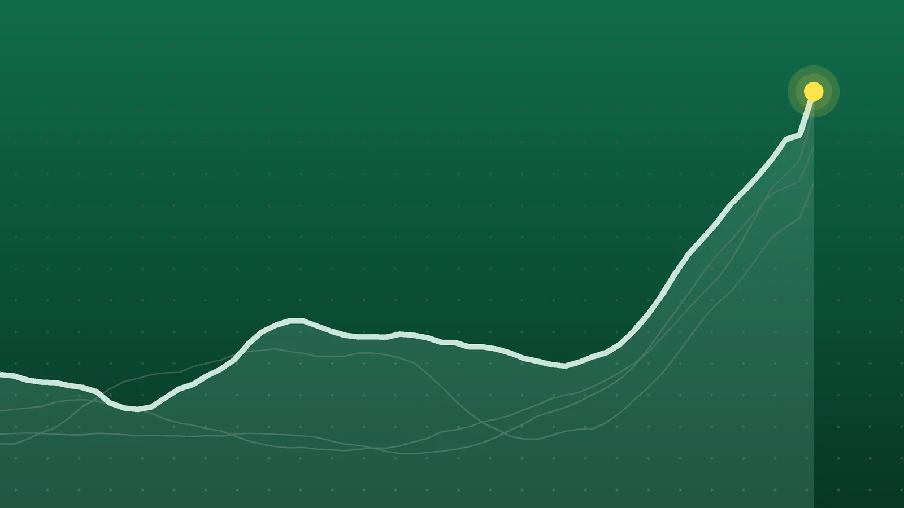

SportsExplainer
NBA Opening Night: Pistons Erase 22-Point Hole to Beat Celtics
Boston’s first game without Jaylen Brown in a decade produced a franchise debut record and a collapse. The Knicks raise their first banner since 1973 next.

Quick take
- Detroit beat Boston 121-113 in the season opener after trailing 72-50 early in the third quarter.
- Paul George scored 38 points, the most by a Celtic in his debut, after his trade from Philadelphia for Jaylen Brown.
- The defending champion Knicks raise their first title banner since 1973 before hosting the 76ers at 7 p.m. ET.
- The regular season runs through April 11, 2027, with All-Star weekend Feb. 19-21 in Phoenix.
Why it's trending The 2026-27 NBA season tipped off on Oct. 20 with a tripleheader on NBC, starting with a Pistons comeback over the Celtics.
What happened
The NBA’s 2026-27 season started with a comeback. The Detroit Pistons trailed the Boston Celtics by 22 points early in the third quarter of Tuesday’s opener, then beat them 121-113 in Detroit, the Associated Press reports.
The loss spoiled a big night for Paul George. In his first game for Boston, he scored 38 points, the most ever by a Celtic in a debut. Boston got George from Philadelphia in an offseason trade that sent Jaylen Brown, the 2024 NBA Finals MVP, to the 76ers.
The afternoon game was the first of three on NBC’s opening night tripleheader. The New York Knicks and the Oklahoma City Thunder play later Tuesday.
How Detroit came back
Boston led 72-50 early in the third quarter, capped by a burst of three straight George 3-pointers inside of a minute. From there, Detroit outscored Boston 71-41 the rest of the way, a 30-point swing over about a quarter and a half.
The turn came from long range. Detroit made just 4 of 18 threes in the first half, CBS Sports notes. After the break, Duncan Robinson and Javonte Green, a former Celtic who didn’t play in the first half, took over. Green’s go-ahead 3 and a Robinson 3 helped put Detroit up 107-99 with just over five minutes to play. The Pistons won the fourth quarter 39-25.
The numbers
| Player | Team | Line |
|---|---|---|
| Paul George | Celtics | 38 points |
| Cade Cunningham | Pistons | 22 points, 8 assists |
| Jalen Duren | Pistons | 22 points, 9 rebounds |
| Duncan Robinson | Pistons | 21 points, 5-of-9 from 3 |
| Javonte Green | Pistons | 19 points, five 3-pointers |
| Derrick White | Celtics | 17 points |
| Payton Pritchard | Celtics | 17 points |
| Jayson Tatum | Celtics | 13 points, 11 assists, 6-of-23 shooting |
Robinson and Green combined for 10 of Detroit’s threes. Tatum, who is set to play his first full season since tearing his Achilles tendon in May 2025, struggled with his shot but led Boston in assists.
Why the opener mattered
This was a matchup of the East’s top two teams from last season: Detroit finished first and Boston second, according to NBC Bay Area. It was also Boston’s first game of the post-Brown era, with George and Tatum now carrying the scoring on the wing.
For Detroit, it was a strong start after an offseason contract standoff with Duren ended in early October with a five-year, $200 million deal. Detroit was the top seed in the East last season but lost in the second round of the playoffs.
Tuesday night’s other games
Both games are on NBC and Peacock.
- 76ers at Knicks, 7 p.m. ET. The defending champion Knicks raise their first championship banner since 1973 and get their rings before tipoff. All five starters from the title team are back. The 76ers rebuilt around new additions LeBron James and Brown, alongside Tyrese Maxey and Joel Embiid.
- Thunder at Spurs (tipoff 9:30 p.m. ET). A rematch of last season’s Western Conference Finals, which San Antonio won in Game 7 in Oklahoma City. Shai Gilgeous-Alexander, the two-time reigning MVP, is trying to become the fourth player in NBA history to win three straight. Victor Wembanyama leads a young Spurs core.
What happens next
The Celtics play their home opener against the Knicks on Friday, while the Pistons visit Miami. Here are the season’s key dates, per Fox Sports:
| Date | Event |
|---|---|
| Oct. 30 | First NBA Cup group games |
| Dec. 11 | NBA Cup title game |
| Dec. 25 | Christmas slate (5 games) |
| Jan. 26-30 | Rivals Week |
| Feb. 19-21 | All-Star weekend in Phoenix |
| April 11, 2027 | Regular season ends |
Quick answers
Who won the first game of the 2026-27 NBA season?
The Detroit Pistons, who beat the Boston Celtics 121-113 in Detroit on Oct. 20.
How many points did Paul George score in his Celtics debut?
George scored 38, a team record for a player’s first game with Boston.
How many games does each NBA team play this season?
Each team plays 82. The initial schedule set 80 games per team, and the last two are decided by results from NBA Cup group play.
Sources
- Associated Press (via WKMG ClickOrlando) NBA season tips off with Pistons rallying to beat Celtics 121-113, spoiling Paul George's debutOct. 20, 2026
- CBS Sports NBA opening night live updates: Pistons storm back from 22-point deficit to stun CelticsOct. 20, 2026
- NBC Sports Boston Celtics-Pistons recap: C's fall apart late, spoil George's stellar debutOct. 20, 2026
- Fox Sports When Does the 2026-27 NBA Season Start? Opening Night ScheduleAug. 13, 2026
- NBC Bay Area NBA opening night schedule: Here are the games that will tip off the seasonOct. 13, 2026
Keep reading
NBA Scores, Oct. 25: Doncic Scores 52 as Lakers Stay Unbeaten
NBA scores for Oct. 25, 2026: all 7 finals, including Luka Doncic’s 52 in a Lakers win at Utah, Detroit’s win in Philadelphia and the Knicks’ 0-3 start.

World Series 2026: Rays vs. Brewers Set, Game 1 Is Oct. 23
World Series 2026 is Rays vs. Brewers, two teams that have never won a title. The schedule, TV channel, how each got here and what to watch.

Como vs. Manchester United: Como Rout United 4-1 in Champions League
Como beat Manchester United 4-1 in the Champions League on Oct. 21. Goals, key stats, what Carrick and Fernandes said and what it means for United.